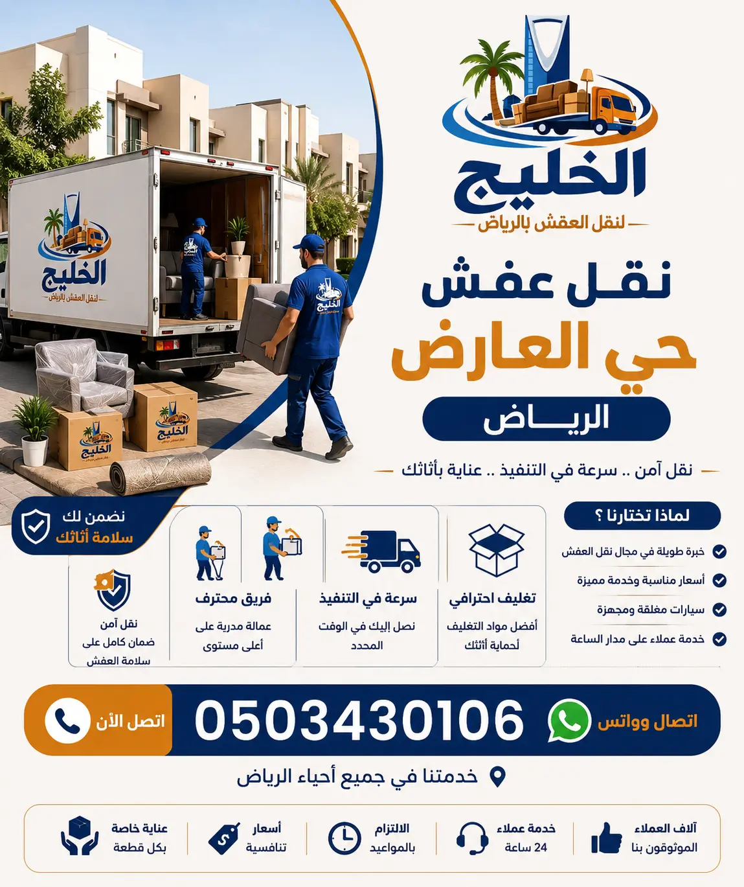

شركة الخليج لنقل العفش تقدم خدمات نقل الأثاث في حي العارض بالرياض بأعلى مستويات الجودة والاحترافية، حيث نوفر فك وتركيب الأثاث، تغليف العفش، ونقل جميع أنواع العفش باستخدام سيارات مجهزة. نحن نعتبر شركة نقل عفش بالرياض ذات السمعة الطيبة التي يعتمد عليها سكان حي العارض تحديداً.
فك وتركيب جميع أنواع الأثاث باحترافية
تغليف احترافي لحماية الأثاث من الخدوش
ضمان على سلامة الأثاث أثناء النقل
تُعد شركة نقل عفش حي العارض بالرياض الخيار الأمثل لكل من يبحث عن التميز والاحترافية في نقل الأثاث بهذا الحي الحيوي الذي يقع في شمال الرياض. يتميز حي العارض بقربه من طريق الملك فهد وطريق العروبة، كما يضم العديد من المجمعات السكنية الحديثة والفلل الفاخرة، مما يجعل الحاجة إلى شركة نقل موثوقة أمراً ضرورياً. نحن في شركة الخليج لنقل العفش نمتلك خبرة تمتد لأكثر من 15 عاماً في تقديم خدمات نقل العفش داخل هذا الحي، حيث نتعامل مع كافة أنواع الأثاث بدءاً من القطع الحديثة وصولاً إلى التحف العتيقة والأثاث الفاخر. تبدأ أسعارنا التنافسية من 350 ريال فقط، وتختلف حسب حجم العفش وعدد الغرف، لكننا نقدم دائماً أفضل قيمة مقابل المال مقارنة بالشركات الأخرى في المنطقة. يمكنك الاطلاع على أسعار نقل العفش في الرياض لمعرفة المزيد عن تنافسية أسعارنا. نعتمد في عملنا على فريق من العمالة المدربة التي تخضع لدورات تدريبية مستمرة على كيفية التعامل مع الأثاث في الأبراج العالية والفلل ذات السلالم الواسعة. كما نتميز بالالتزام التام بالمواعيد، حيث نصل في الوقت المحدد وننهي عملية النقل بأسرع وقت ممكن دون أي تقصير في الجودة. إذا كنت تبحث عن أفضل شركات نقل العفش في الرياض لحماية أثاثك، فإن شركة الخليج هي الاسم الموثوق. كما ننصح بقراءة نصائح مهمة قبل نقل العفش لتكون على دراية كاملة بكيفية تجهيز منزلك لعملية النقل. ولمن يبحث عن التوفيق بين الجودة والسعر، نوصي بزيارة أرخص شركة نقل عفش بالرياض حيث تجد أن أسعارنا الأقل. اتصل بنا اليوم للحصول على عرض سعر مجاني وخدمة لا مثيل لها في نقل عفش حي العارض. فريقنا جاهز لتقديم خدمات نقل العفش داخل الرياض بكل احترافية، ونضمن لك الحصول على تجربة فريدة من نوعها. كما يمكنك الاطلاع على دليل نقل الأثاث في الرياض الشامل الذي يوضح كافة التفاصيل التي تهم العميل قبل الشروع في عملية النقل. لا تتردد في التواصل معنا عبر الموقع الرسمي للحصول على عروض حصرية.

نقدم خدمات مساعدة مثل فك وتركيب الأثاث، تغليف العفش بمواد عازلة، بالإضافة إلى خدمات متخصصة مثل فك وتركيب غرف النوم مع فك وتركيب غرف النوم بالرياض، وهي خدمات ضرورية جداً عند نقل المنزل، حيث نضمن لك تركيب الأثاث بدقة عالية. كما نوفر تركيب أثاث ايكيا بالرياض. ندرك أن حي العارض يحتوي على العديد من الأبراج السكنية المرتفعة، لذلك وفرنا ونشاً مخصصاً لرفع العفش للأدوار العليا، مما يوفر الوقت والجهد ويحمي الأثاث من التلف الناتج عن استخدام السلالم. نحن نضمن لك وصول عفشك إلى المكان الجديد بحالة ممتازة، بفضل اعتمادنا على أحدث السيارات المجهزة بأنظمة تعليق هوائي تقلل من الاهتزازات. لمزيد من المعلومات حول نقل الأثاث داخل الرياض، يمكنك زيارة دليل أحياء الرياض لنقل العفش الشامل الذي أعده خبراؤنا. ومن أجل تحقيق أقصى حماية، نوصي بالاطلاع على كيفية حماية الأثاث أثناء النقل لتتعرف على الإجراءات الدقيقة التي نتخذها للحفاظ على ممتلكاتك. كما نقدم خدمات تغليف العفش بالرياض. نحن نؤمن بأن العميل يستحق الأفضل، لذلك لا نقدم وعوداً فارغة بل نقدم خدمات قابلة للقياس والتقييم عبر شركات نقل العفش في الرياض. كما نتعاون مع أفضل شركات تخزين العفش لتوفير حلول تخزين آمنة. واستعداداً لعملية النقل، ننصح بقراءة أفضل مواد تغليف الأثاث لمعرفة كيف نحمي ممتلكاتك. يمكنكم أيضاً مشاهدة خدمات تغليف الأثاث بالرياض المقدمة من فريقنا والتي تعتبر الأفضل في مجال الحماية. اتصل بنا لتحصل على عرض سعر مفصل يتناسب مع حجم العفش الخاص بك في حي العارض. نحن نضمن لك نقلاً سلساً مع فك وتركيب العفش في الرياض الذي نقدمه بأيدي أمينة. كما يمكنك مقارنة خدماتنا مع الآخرين من خلال دليل شركات نقل العفش بالرياض لتتأكد من أنك تتعامل مع الأفضل.
خدمة نقل عفش المنازل بحي العارض التي نقدمها تشمل كل شيء بدءاً من غرف النوم الرئيسية وغرف الأطفال وصولاً إلى المطابخ المتكاملة والمجالس العربية الفاخرة. نحن ندرك أن كل منزل في حي العارض له طابعه الخاص، فبعض المنازل تحتوي على أثاث كلاسيكي ثقيل يحتاج إلى تفكيك دقيق، وبعضها الآخر يحتوي على ديكورات حديثة وأجهزة كهربائية ذكية. فريقنا من المدربين على أعلى مستوى قادر على التعامل مع جميع هذه الحالات بمهنية واحترافية. نولي اهتماماً كبيراً بمرحلة التغليف، حيث نستخدم أكثر من طبقة من البلاستيك الفقاعي (بابل راب) والكراتين المقواة لحماية قطع الأثاث الحساسة مثل الزجاج والمرايا والأجهزة الإلكترونية. ننصح بالاطلاع على أفضل طرق تغليف الأثاث لضمان الحماية المثلى. في شركة الخليج لنقل العفش، نعتز بسمعتنا التي بنيناها على مدى سنوات من العمل الدؤوب في حي العارض والأحياء المجاورة. نوصي عملاءنا الكرام بقراءة أفضل شركة نقل عفش الرياض لمعرفة المزيد عن جودة خدماتنا. كما أننا نقدم نصائحنا عبر مدونتنا حول مواد تغليف الأثاث لتكون على دراية بالجهد الكبير الذي نبذله لحماية ممتلكاتك. نستخدم سيارات مجهزة بأحزمة ربط قابلة للتمدد لمنع تحرك الأثاث أثناء السير، كما أن سائقينا مدربون على القيادة بهدوء لتفادي المطبات أو الفرامل المفاجئة التي قد تؤدي إلى تلف الأثاث. نضمن لك انتقالاً سلساً وآمناً لمنزلك في حي العارض، دون أي خدوش أو أضرار. للمزيد عن خدماتنا يمكنك مراجعة خدمات نقل العفش داخل الرياض. تجنب الأخطاء الشائعة عند نقل العفش بالاعتماد على خبرتنا الطويلة. نحن نحرص على تقديم تجربة مميزة خالية من المتاعب، حيث نتعامل مع كل قطعة أثاث على أنها قطعة فريدة تستحق الرعاية الكاملة.
نحن متخصصون في نقل الشقق السكنية بحي العارض، وهو الحي الذي يشهد إقبالاً كبيراً على الشقق الحديثة والفاخرة. نواجه تحديات يومية مثل عدم وجود مصاعد كبيرة في بعض المباني، أو الحاجة إلى تصاريح دخول للأبراج الفاخرة. فريقنا لديه خبرة كاملة في التعامل مع إدارات المجمعات السكنية في حي العارض والحصول على التصاريح اللازمة مسبقاً لضمان عدم تأخير عملية النقل. نقدم خدمة ونش رفع عفش للأبراج العالية التي يصعب نقل الأثاث الثقيل فيها عبر المصاعد. لضمان تجربة مثالية، ننصح بالاطلاع على دليل شركات نقل العفش في الرياض. كما يمكنك معرفة تفاصيل الفك والتركيب عبر فك وتركيب العفش في الرياض. نحرص أيضاً على تقديم حلول مرنة تناسب سكان الشقق، حيث نوفر عمالة إضافية لتسريع عملية النقل إذا كان هناك وقت محدد للانتقال. ننصح أيضاً بمراجعة أرخص شركة نقل أثاث بالرياض لترى كيف نوفق بين السعر المناسب والجودة العالية. جميع عمليات نقل الشقق لدينا مؤمنة ضد الأضرار المحتملة، ونضمن لك التعامل بكل شفافية من البداية حتى إنهاء عملية التركيب في المنزل الجديد.
خدمة نقل الفلل والقصور بحي العارض تتميز بالدقة العالية والتعامل مع التحف والأثاث الفاخر. نحن نمتلك فريقاً متخصصاً في التعامل مع الأثاث الفاخر من خلال نقل فلل بالرياض. قبل البدء في النقل، نقوم بتوثيق حالة الأثاث بالصور والفيديو بالاتفاق مع العميل، لضمان الشفافية التامة. يمكنك الاطلاع على أفضل شركة نقل عفش في الرياض. كما أننا نقدم استشارات مجانية حول كيفية تخزين الأثاث في الرياض. نستخدم شاحنات مخصصة للفلل ذات أرضيات غير قابلة للانزلاق، وجدران داخلية مبطنة لحماية الأثاث من أي احتكاك. لكل فيلا نقوم بوضع خطة نقل خاصة تراعي المساحات الواسعة والحدائق والسلالم الداخلية الفخمة. نحرص على أن تكون عملية النقل هادئة وغير مزعجة للجيران، لأننا ندرك مكانة القاطنين في حي العارض الراقي. تعرف على خدمات تخزين الأثاث بالرياض التي نوفرها بأسعار تنافسية. نحن نضمن لك أن يصل أثاثك الفاخر إلى وجهته كالجديد تماماً.
نقدم خدمة نقل المكاتب والشركات بحي العارض بطريقة احترافية تقلل من وقت التوقف عن العمل. نعمل خارج أوقات الدوام الرسمي لنقل المكاتب بالكامل بما فيها الأجهزة الحساسة (سيرفرات، أجهزة كمبيوتر) والملفات الهامة. ننصح بقراءة نقل المكاتب في الرياض. نمتلك فريقاً متخصصاً في فك وتركيب المكاتب الحديثة، ونستخدم صناديق مخصصة للأجهزة الإلكترونية لحمايتها من الصدمات الكهربائية والفيزيائية. نحن ندرك أن وقت العمل هو رأس مال العميل، لذلك نلتزم بجداول زمنية دقيقة للغاية. يمكنكم الاطلاع على خدمات فك وتركيب العفش التي نوفرها باحترافية عالية. نقدم أيضاً خدمات ما بعد النقل مثل إعادة تنظيم الأثاث في المكتب الجديد حسب رغبة الإدارة. شركتنا هي الخيار الأمثل لشركات الاستشارات والبنوك والشركات التقنية في حي العارض.
تعتبر خدمة فك وتركيب العفش بحي العارض حجر الزاوية في عمليات النقل الناجحة، ولدينا نجارين محترفين. نقوم بفك غرف النوم بجميع أنواعها وتغليف القطع الصغيرة وترقيمها. يمكنكم الاطلاع على دليلنا المتخصص في خدمة فك وتركيب غرف النوم. نستخدم أدوات حديثة لمنع خدش أو كسر الأثاث أثناء الفك، ونحتفظ بكل المسامير والأجزاء الصغيرة في أكياس مخصصة مع بطاقات تعريفية لتسهيل عملية التركيب في المنزل الجديد. هذه الخدمة تشمل أيضاً تركيب الدواليب والمطابخ المفككة. للحصول على أفضل النتائج، ننصح بالاستعانة بفريقنا المتخصص من خلال نقل الأثاث في الرياض.
خدمة تغليف العفش في حي العارض لا تقل أهمية عن عملية النقل نفسها. نحن نستخدم أفضل أنواع مواد التغليف. كما نقدم خدمة تغليف الأثاث في الرياض التي تؤكد على ضرورة التغليف كخطوة أساسية. نستخدم الكراتين المزدوجة والزوايا الكرتونية لحماية زوايا الأثاث، بالإضافة إلى الأغطية البلاستيكية المقاومة للماء للحماية من الغبار والرطوبة. لكل قطعة أثاث طريقة تغليف خاصة تتناسب مع مادتها وهشاشتها، والأثاث الزجاجي يتم تغليفه بطبقتين من الفقاقيع الهوائية وصندوق خشبي إذا لزم الأمر. اقرأ المزيد عن مواد تغليف الأثاث.
أسطولنا من دينا نقل عفش حي العارض يضم أحدث الموديلات من السيارات المجهزة. نوفر أحجاماً مختلفة من السيارات تناسب كافة الاحتياجات. يمكنك مقارنة أسعارنا عبر الاطلاع على دينا نقل عفش بالرياض. سياراتنا مجهزة بأنظمة تعليق هوائي تخفف من الاهتزازات على الطرقات غير المستوية، بالإضافة إلى أحزمة شد قوية تثبت الأحمال بشكل احترافي تمنع أي حركة أثناء المنعطفات أو المطبات. لدينا سيارات بأحجام تبدأ من 12 قدم إلى 24 قدم لتغطي شقة بغرفة نوم واحدة أو فيلا كاملة بغرف متعددة. نحرص على نظافة السيارات وتعقيمها قبل كل عملية نقل لضمان بيئة صحية للعفش.
تعتبر خدمة ونش رفع عفش حي العارض ضرورية جداً في هذا الحي الذي يضم العديد من الأبراج السكنية العالية. نمتلك ونشاً هيدروليكياً حديثاً يمكنه الوصول إلى ارتفاعات تصل إلى 50 متراً. يتم الونش من قبل فنيين مدربين على عمليات الرفع الآمنة. هذه الخدمة مثالية للأثاث كبير الحجم الذي لا يتسع للمصاعد، مثل الأرائك الضخمة، وأسرة كينغ سايز، والبيانو، والخزائن الثقيلة. تكلفة الونش لدينا تبدأ من 450 ريال وهي أقل بكثير من تكلفة الأضرار التي قد تحدث عند محاولة نقل هذه القطع عبر السلالم. نضمن تأميناً كاملاً على الأثاث أثناء عملية الرفع.
نقدم خدمة تخزين العفش بحي العارض في مستودعات مجهزة. يمكنك الاطلاع على تخزين الأثاث في الرياض وشركة تخزين عفش بالرياض. مستودعاتنا تتميز بنظام تكييف للتحكم في الرطوبة ودرجة الحرارة لمنع نمو العفن أو تلف الخشب والأقمشة كما أن المستودعات مراقبة بكاميرات على مدار الساعة ومؤمنة ضد الحريق والسرقة. نقدم أيضاً خدمة التغليف قبل التخزين باستخدام مواد مخصصة للتخزين طويل الأمد، ونقوم بتوثيق محتويات كل وحدة تخزين لتسهيل استرجاعها لاحقاً. هذه الخدمة مثالية للمسافرين أو الذين يقومون بترميم منازلهم.
| البند | شركة الخليج | شركات أخرى |
|---|---|---|
| سعر نقل شقة (3 غرف) | 350 - 650 ريال | 550 - 1000 ريال |
| سعر نقل فيلا (5 غرف) | 900 - 2200 ريال | 1300 - 3800 ريال |
| ونش رفع عفش | 450 - 900 ريال | 650 - 1300 ريال |
تقدم شركة الخليج لنقل العفش خدماتها المتكاملة من الفك والتركيب والتغليف والنقل والشحن في كافة أحياء ومناطق العاصمة الرياض، بأسطول سيارات حديثة وفنيين مدربين. انقر على الحي للوصول للتفاصيل:
شركة الخليج هي الأفضل حسب أفضل شركات نقل العفش.
تبدأ الأسعار من 350 ريال. راجع أرخص شركة نقل عفش بالرياض.
نعم عبر خدمة غرف النوم ودليل الفك والتركيب.
اقرأ دليل الحماية ونصائح ما قبل النقل.
نعم، عبر تخزين الأثاث بالرياض وأفضل شركة تخزين.
نعم، راجع أفضل شركة نقل عفش الرياض.
اتصل 0503430106 أو عبر الواتساب.
نعم عبر نقل فلل بالرياض.
نستخدم أفضل مواد تغليف الأثاث.
من 4 إلى 6 ساعات للشقة.
نعم، دينا نقل عفش بالرياض حديثة.
نعم، تغليف الأثاث بالرياض متاح.
نعم، بخبرة عالية.